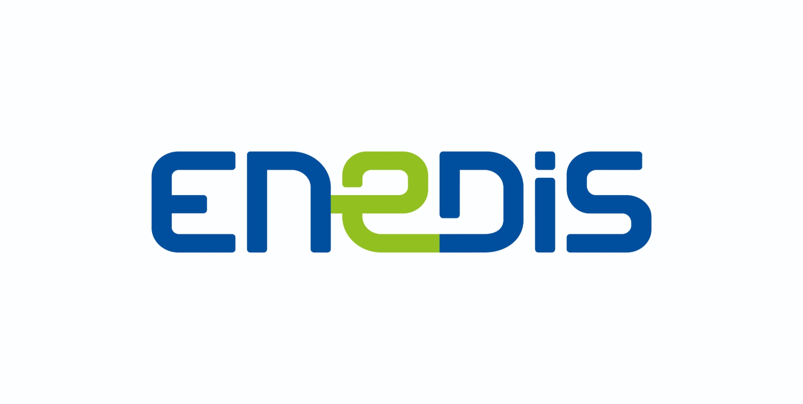

Branchés sécurité · niveau renforcé
9 règles vitales
Révise les règles essentielles, puis teste-toi avec trois formats courts et variés. Tout le contenu est tiré de l’affiche fournie.
9 fichesQuiz scénariséConnexions visuellesLe mot juste
Roue des participants
Ajoute les noms : le participant choisi devra citer de tête les 9 règles vitales !
Le nom choisi apparaîtra ici.
Participants
6 participant(s)
Les lignes vides sont ignorées. Les doublons sont conservés et donnent donc davantage de chances au nom répété.
Quiz sécurité
Choisis ton niveau : plus il monte, plus les formulations se ressemblent.
Connexions sécurité
Sélectionne d’abord un risque à gauche, puis sa règle exacte à droite. Certaines formulations sont très proches : observe chaque mot avant de créer une connexion.
Risques
Formulations proposées
Crée 6 connexions parmi 12 formulations proches.
Le mot juste
Complète exactement les règles de l’affiche. Une différence d’un seul mot peut changer le sens.